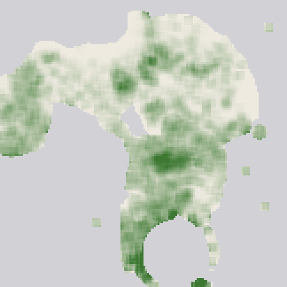
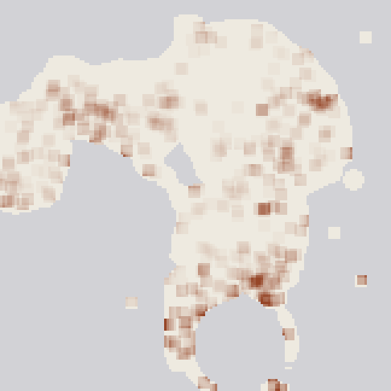
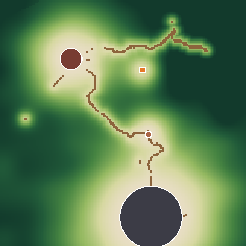
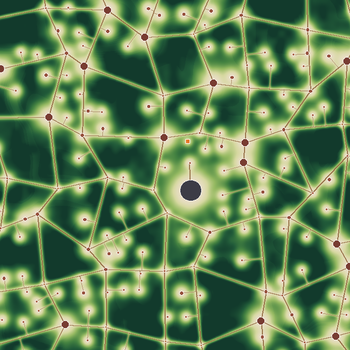
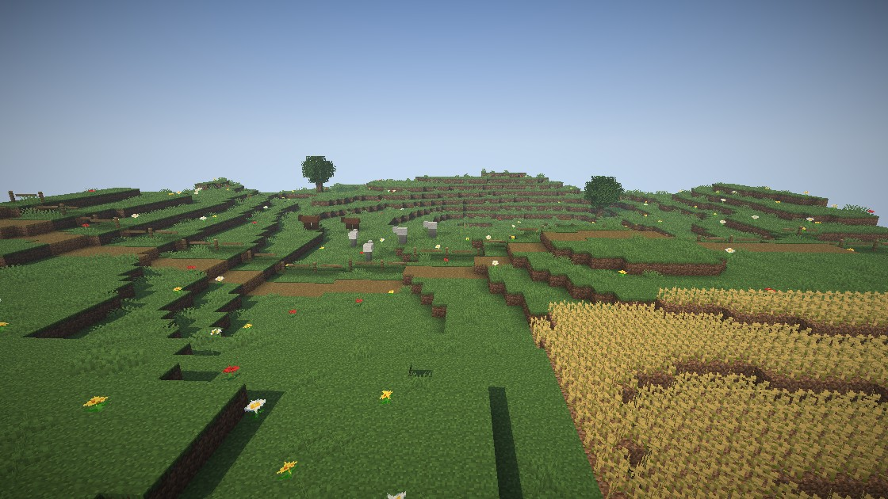
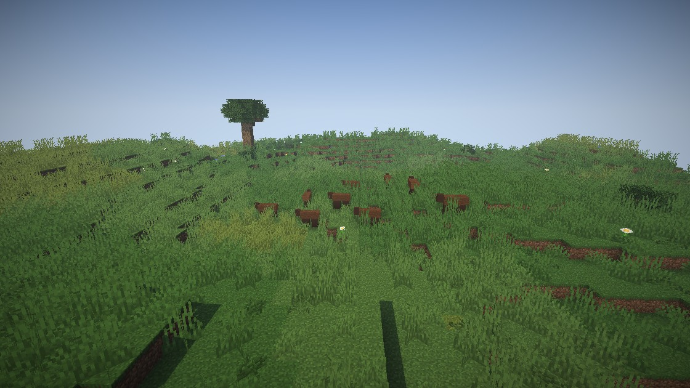
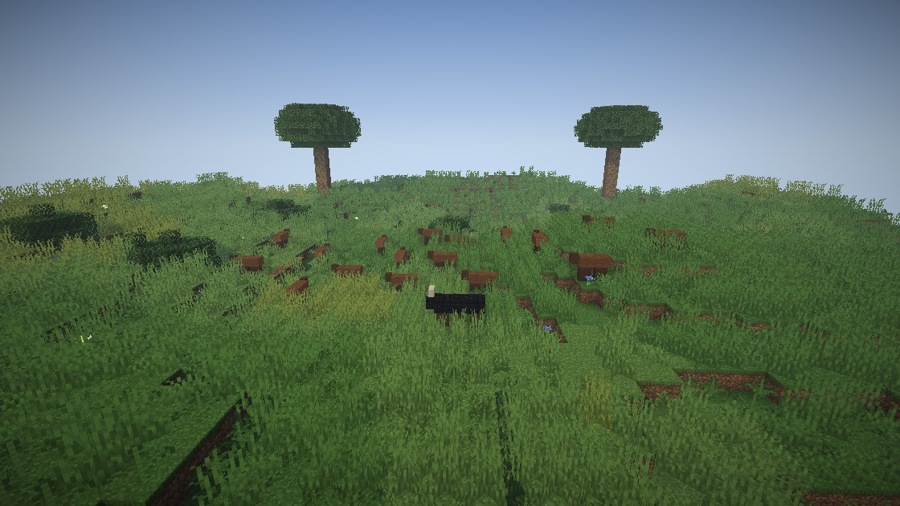
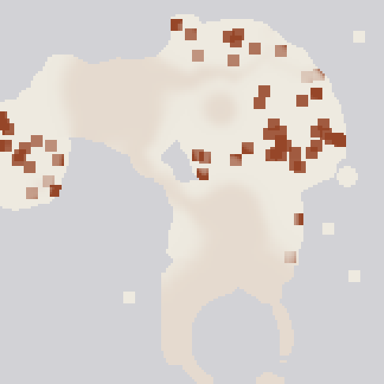

Settled land should feel tamed. The further you get from people, the wilder it should grow: long grass, big bushes, old trees, and real herds with packs hunting them. Then you go out and hunt, Monster Hunter style.
This page is the plan. Nothing is built yet. It ends with seven decisions; every one has a recommendation, so "go with the recommendations" is a complete answer.
You want the world to vary between civilised and wild in a way that feels natural, with no hard borders. The wilder a place, the bigger its vegetation and the bigger its herds and packs. And you want hunting to become a thing you do: find signs, track something, fight it, carve it, craft from it.
A strong result: walking out of a village, you can feel the land change. The lane has short grass and sheep, the fields beyond go long and gold, and an hour out you crest a hill and see thirty aurochs grazing below with wolves lying in the grass at the treeline. You find fresh prints, follow them, and fight the herd's bull.
A weak result: more grass everywhere, or more animals everywhere. The same everywhere is the problem we have today.
Not acceptable: lag from big herds, visible lines where the land changes, settled land turned into jungle, or already-explored land rewritten.
measured I read your world, New World (7), without changing it: all 12,935 generated chunks (about 3.3 km²), every plant and every saved animal, and set them against how settled each place is (distance to Carillon, Bramgrove, Goldbury, your Hearth and the roads, using the real road blocks).
| Land, by how settled it is | Chunks | Short grass | Tall grass | Bushes | Animals per km² |
|---|---|---|---|---|---|
| Most settled (tamed) | 2,468 | 22.7 | 2.8 | 0.47 | 586 |
| Pasture | 2,062 | 23.9 | 1.6 | 0.62 | 391 |
| Wild | 1,714 | 20.2 | 1.5 | 0.60 | 195 |
| Deepest wild | 3,312 | 22.5 | 1.6 | 0.38 | 391 |
Plants are counted per chunk (256 columns). Bands use the wildness field proposed below, built from your real roads and settlements. How closely each column follows wildness (correlation, 1 = perfectly): tall grass −0.12, short grass −0.02, bushes −0.05, animals −0.03.
So the land is the same everywhere. If anything, the most settled land has the most tall grass and the most animals. About one chunk in twenty has an animal at all, in groups of two to four.


| What you see | Cause in the code |
|---|---|
| Grass is the same everywhere | Plants come from each biome's fixed counts per chunk. Nothing in the game knows how settled a place is. The Soft Land's ground palette has an empty ranks slot waiting for something like this. |
| Animals are the same everywhere | Vanilla places farm animals per biome when a chunk is made. Our fauna spawn by biome under per-player caps (5 neutral, 5 hunters). |
| Herds are small and all alike | The ledger (living.population.Ledger) gives every 512-block cell up to two herds of 6 to 10, capped at 12 bodies, 24 near a player. Only our five fauna grazers, never cows, horses or goats. |
| Packs don't really hunt | A pack's position is a formula ("24 blocks off its herd at night"). Kills happen as dice when nobody watches. The bodies never stalk or chase. |
| Harder land is emptier, not wilder | QuietLand thins animal spawns by danger rank (B keeps a third, S a tenth). That is the opposite of what you're asking for, so it has to change (decision 2). |
| Hunting is just killing | Alphas exist (wild kin, "Alpha of <region>") and named beasts have lairs, but there are no signs to read, no tracking, no parts to break and no carving. |
Most of the pieces you need already exist: regions, the ledger, wild kin and alphas, the new form bodies (aurochs, boar, ram), lairs, the Hunting craft's amber Tracks, the wind, Arms' hide tags, Trails and the Atlas. What's missing is one idea that ties them together: how wild a place is.
The region levels already say how dangerous land is. Wildness is a second, separate measure: how untouched it is. Keeping them apart gives the world four kinds of place instead of one.
One number from 0 to 1 for every place. It is worked out from the place itself, so every computer gets the same answer, nothing is simulated, and it costs almost nothing.
Four bands give it words: Tamed (under 0.2), Pasture (to 0.45), Wild (to 0.7) and Deep wild.


The same patch of land, drawn three ways. mock-up These are drawn with the Soft Land plan's block renderer; the animals are plain box stand-ins, not the game's models.



| Per chunk, roughly | Today (everywhere) | Tamed | Pasture | Wild | Deep wild |
|---|---|---|---|---|---|
| Short grass | 22 | 15–22 | 30 | 40 | 45 |
| Tall grass and ferns (in swathes) | 2 | 0–1 | 4 | 25 | 55 |
| Big bushes (leaf mounds 2–5 wide) | 0 | 0 | 0.5 | 2 | 4 |
| Wildflowers | 8 | 8 | 14 | 8 | 6 |
| Fallen logs, thickets | few | none | few | some | many |
| Old giant trees | none | none | none | rare | 1 in 6 chunks |
| Grass colour | one tint with patches | a touch greener | as now | warmer, seed heads | deeper, tawny patches |
Flowers peak in pasture because grazed meadows bloom; real wild grass crowds them out. Forests get the wildness too: thick undergrowth, ferns, moss, berry thickets and fallen trunks in the deep wild, an open floor near people.
How: new features in the Awakened Ground pack (long-grass swathes, big bushes, thickets, old giants), a tidy-up pass that mows tall grass near people, the palette's empty slot filled by wildness, and the lawn colour reading a small per-chunk wildness record. Far Sight reads the same field, so far meadows have the same tint and tree density as near ones.
Only new chunks change. Land you've already explored keeps its blocks. In your current world, the new features start at the edge of what you've explored (decision 3).
The ledger already keeps animals as numbers and gives them bodies only near players. It grows into something you can see from a hilltop.

| Tamed | Pasture | Wild | Deep wild | |
|---|---|---|---|---|
| Who lives there | Farm animals in twos and fours (as now) | Small wild groups | Herds and a pack | Big herds, big packs, alphas, named beasts |
| Herd size | 2–4 | 4–8 | 8–16 | 16–30 |
| Pack size | none | 2–3 | 3–5 | 5–8 with an alpha |
| Animals per km² | 300–500 | ~500 | 800–1,000 | 1,500–2,500 |
Vanilla animals join our fauna. A wild herd of cows is an aurochs herd, pigs a boar sounder, sheep a flock of wild rams; from C land they wear the new form bodies (mob-forms built them today), so a B-land aurochs herd really is a herd of horned beasts. Horses and donkeys run in plains herds, goats on crags, and our mossbacks, frost stags, dune rays and crag rams stay where they live. Wolves hunt by day and dusk; our gloomstalkers, wisp hounds and thornlings by night.
Each herd near a player has one small brain on the server that thinks once a second. The animals just follow it. Its moods: graze (spread out, heads down), drift to the next pasture along its usual route (so herds wear paths), water, bed down at night in a tight group, alert (heads up, bunching), flee and, for big herds in wild land, stampede.
What startles them: you on your feet inside their flight distance (wilder herds are warier), your scent carried downwind (the game's wind already exists, so a hunter learns to come from downwind and crouched), a pack attacking, or one of them being hit. The alarm ripples from the near side to the far side over half a second, so a herd turns like a wave instead of all at once. It runs away from the danger over ground it can cross, then regroups.
Packs have their own brain: rest at the den, prowl toward their herd, stalk from downwind, chase the straggler (the slowest, youngest or rearmost), feed at the kill, and retreat when the alpha is badly hurt. A pack can turn on you if you walk into its kill.
Herds are world state, the same for everyone; their state is saved in the ledger. Far from players nothing simulates: where a herd is follows from its seed and the clock, as it does today, and each night the pack's hunting is settled in one step.
Hoof and paw prints along the herd's real path (fresh ones for everyone, fading over a couple of in-game hours; your Tracks perk makes them glow amber and last), droppings where herds bed, kill sites with bones where packs fed, trampled grass along migration routes. Each tells you what passed, how many and how long ago.
What Monster Hunter gets right, and what we take:
| In Monster Hunter | Why it works | In AWAKEN |
|---|---|---|
| Tracks and scoutflies (World): gathering a monster's traces levels the flies, which first lead to the next trace, then straight to the monster. | Finding the quarry is a hunt in itself, and you get better at finding each kind over time. | Reading signs feeds the band. After a few, its amber scout motes drift toward the next sign; after more, straight to the quarry, and it goes on your Atlas and Now line. Each kind you hunt is studied for good (the Codex learns its weak spots and parts); the trail itself fades. |
| Part breaks: horns snap, tails sever, and that part drops. | Every hit visibly matters; you aim for what you need. | Each quarry has 2–4 parts (horns, tusks, back plates, tail). Enough damage to a part breaks it: it vanishes from the body, the beast staggers, and the part is yours. |
| Carving: each hunter carves the body a few times. | A short ritual that says "you earned this", fair in a group. | The quarry's body stays a minute. Every hunter who fought carves it three times, with a short hand animation. Hide comes by the land's tier; horns, sinew and rarely an alpha heart by species. |
| Limping back to its nest; turf wars; herds with alphas (Wilds). | The fight has an arc and the world is alive around it. | A beaten quarry flees to its bed to rest; you follow. Its herd scatters or stampedes when the fight starts; its pack comes to its call. |
The quarries, first: the alphas of herds and packs, on the new form bodies, and the twelve named beasts in their lairs (they already exist). The Creature Kit's beasts join only after one passes your bar.
Where it plugs in: parts go into Arms' existing hunter tags (hide by land tier, so "the land owns the hunt's parts" still holds); trophies hang in the Trophy Hall; the Hunting craft pays as it does; the Journal shows the hunt you're tracking; Trails gets hunt steps; the Atlas keeps the signs you've read, the beds and dens you've found, and kill sites. Village notice boards can post a hunt ("the bull that breaks our fences") later, in stage 5.
| Option | What it is | Why not / why |
|---|---|---|
| A. Tune what exists | Bigger ledger herds, more grass in the palette, keep QuietLand. | Cheap, but the land is still the same everywhere: more of everything, with no civilised-to-wild change. Misses the point. |
| B. Wilder by region | Each region gets a wildness roll, like its level. | Regions are 1,600 blocks wide, so a village would sit in jungle and the change would come at region borders. Not natural. |
| C. A wildness field (recommended) | One smooth value from people, roads, remoteness, terrain and noise, read by vegetation, herds and hunts. | Natural gradients, real variation, cheap, the same on every machine, and every system reads one number. |
| D. A living simulation | Wildness that grows back or retreats as players settle and hunt, every animal simulated. | The most alive, but it costs server time and can't change land already made. Your Hearth taming its land is the small part of this worth having, and it's in C. |
What would change my mind: if the in-game look of the deep wild feels too thick to walk through, the tall-grass curve comes down (one number); if herds of 30 cost too much on your Mac, the cap comes down before anything else.
The field: about 1.5 µs a lookup for the region level (measured) plus a few for settlements and roads, 16 lookups a chunk, so well under a millisecond per new chunk on worldgen threads. Herds: at most 40 ledger animals near a player (24 today), one brain per herd, a second's thought, steering only animals that stray from their place. Target: all herds and packs near one player under 0.5 ms a tick, checked by a GameTest bench before anything ships.
| Risk | What we do |
|---|---|
| A visible edge where new land meets explored land | Expected in your current world (decision 3). The colour change is gentle; the long grass starts at the edge. |
| Herds get stuck or split on rough ground | The brain gives up a route after a timeout and picks another; animals out of sight that can't keep up quietly rejoin the count. |
| Too many animals, lag | Hard caps per herd and per player; the far part of a big herd stays a number. |
| A world without roads or Carillon | The field uses what exists; without roads it reads settlements and remoteness. |
| Long grass hides creatures and items | Plates and the band still show threats; tall grass only grows thick in wild and deep land. |
Each stage is useful on its own, is tested, and goes to CI before the next.
About 30–39 builder hours in all. Stage 2 is the biggest unknown (herd movement on real terrain); stage 4 needs a few new part items in Arms' sources list, which I'll add through Arms' own generator and note in SPEC. Coordination notes are in the shared folder for mob-forms (hiding a broken horn's bone), the Creature Kit and lock-on.
Seven, each with a recommendation.
A calm far valley can be full of wild life; a town in hard land is still tamed. Recommend: yes.
QuietLand stops thinning herds in harder land. A and S land keep their hush of birds and insects for the dread. Recommend: yes. The alternative is keeping QuietLand, which makes the deep wild emptier the harder it gets.
Vegetation applies to newly made land in any world with the Awakened Ground pack, including New World (7). What you've explored stays as it is, so there is an edge where the new land starts. Herds, packs and hunts work everywhere straight away. Recommend: yes. The alternative is new worlds only.
Herds up to 30, and up to 40 ledger animals near a player (24 today); the rest of a big herd stays a number in the ledger. Recommend: yes, lowered first if it costs too much.
Fresh tracks everyone can see, the band's scout motes after reading signs, parts that visibly break, the quarry limping to its bed, three carves per hunter. Recommend: all of it.
Herd and pack alphas on the new form bodies, plus the twelve named beasts. Creature Kit beasts only once one passes your bar. Recommend: yes.
I build stages 0 to 5 myself, in order, with no sub-agents. Splitting would pay a little: after stage 0, the land (stage 1) and the creatures (stages 2–4) touch different files, and a second builder could save about a day of waiting. Recommend: one builder unless you want it sooner.